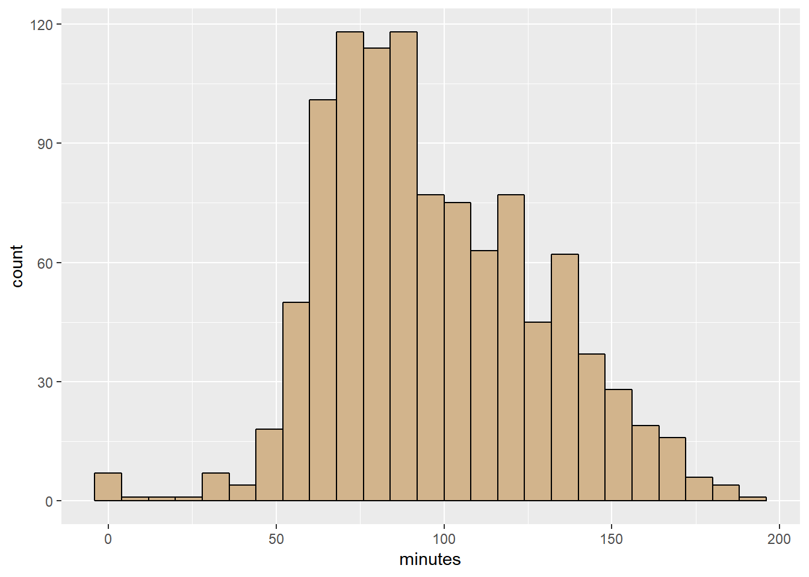
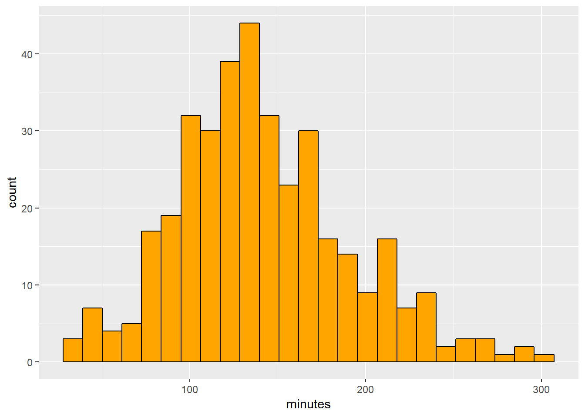
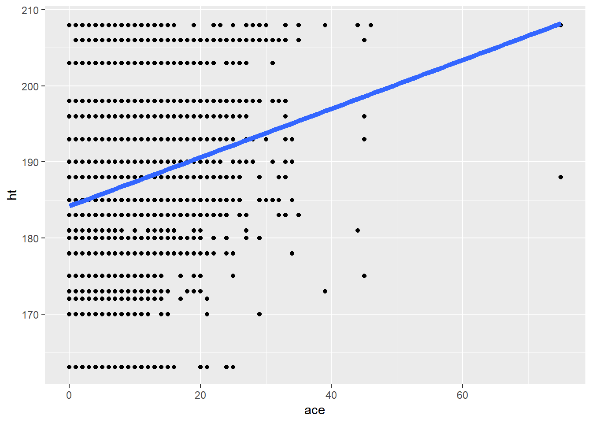
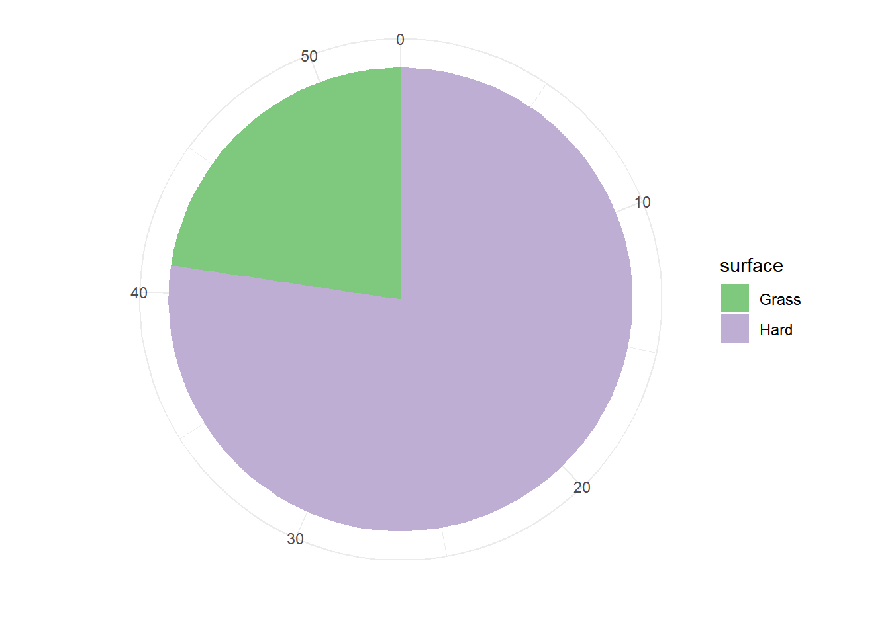
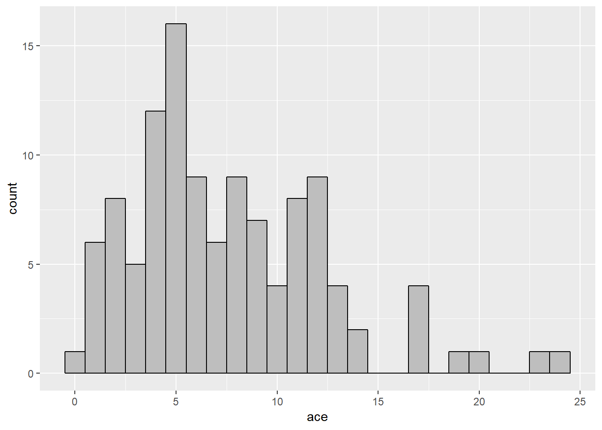

7 Part II - Tennis2017
7.1 Introduction
7.1.1 Topic
.
Tennis is one of my 3 favorite sports - alongside with soccer and basketball. I have been following tennis since 2010, and have also witnessed so many great matches over the years. I actually stopped watching it for a little while after my third year, mainly due to the fact that my favorite tennis player - Roger Federer - was dealing with injury back then. But then I started paying attention to tennis again last year (2017), because Federer has made an incredible comeback and played very well. So for all of those reasons, I decided to choose a dataset about men’s tennis in 2017 and make some analysis.
7.1.2 Data
I started looking for data, and I was fortunate to find one dataset about tennis matches in 2017 available online. Here’s the link to the online dataset: https://github.com/JeffSackmann/tennis_atp/blob/master/atp_matches_2017.csv . I copied and put everything in a text file (.txt)
This dataset consists of 2886 observational units - which are the number of tennis matches in 2017. It has a total of 49 variables which can be divided into the following groups:
- Tournament: tourney_id, tourney_name, surface, draw_size, tourney_level, tourney_date
- Match: match_num, best_of (3 or 5), round, minutes
- Player (winner/loser) information: id, seed, entry, name, hand (L/R), ht (height - in cm), ioc (country code), age, rank, rank_points
- Player(winner/loser)’s stats: ace, df (double-fault), svpt (service points), 1stIn, 1stWon, 2ndWon (1st/2nd = First/Second serve), svGms (service games), bpSaved, bpFaced (bp = break points)
7.2 Analysis
As usual, before making any analysis, the following packages must be loaded.
library(tidyverse)
library(knitr)
library(mosaic)The data file was read in from my personal folder.
ATP2017 <- read.csv("~/Data229/Project/Tennis2017/ATP2017.txt")7.2.1 Wins and Losses
First, let’s do some simple data transformation to find out who had the most W’s and L’s last year.
kable(ATP2017 %>%
group_by(winner_name) %>%
summarise(Wins = n()) %>%
arrange(desc(Wins)) %>%
head(8))| winner_name | Wins |
|---|---|
| Rafael Nadal | 67 |
| David Goffin | 59 |
| Alexander Zverev | 55 |
| Roger Federer | 53 |
| Grigor Dimitrov | 49 |
| Roberto Bautista Agut | 48 |
| Dominic Thiem | 47 |
| Marin Cilic | 45 |
Rafael Nadal - who ended 2017 as the number 1 ranked single tennis player - led the way with 67 wins. We also found out that 4 players had 50+ wins last year: Nadal, D.Goffin, A.Zverev, R.Federer.
kable(ATP2017 %>%
group_by(loser_name) %>%
summarise(losses = n()) %>%
arrange(desc(losses)) %>%
head(8))| loser_name | losses |
|---|---|
| Paolo Lorenzi | 35 |
| Joao Sousa | 32 |
| Mischa Zverev | 32 |
| Albert Ramos | 31 |
| Benoit Paire | 31 |
| Kyle Edmund | 30 |
| Robin Haase | 30 |
| Jan Lennard Struff | 29 |
Paolo Lorenzi had the most losses in 2017 with 35 L’s. 7 players got defeated 30 or more times last year.
7.2.2 Match Duration
Next, I wanted to analyze the length of 2017 matches. I devided this into 2 separate parts: Best of 3 and Best of 5
7.2.2.1 Best of 3 Matches
Best of 3 matches are matches on the ATP (A) and Masters (M) levels. Below are the numerical and visual summaries of the duration (in minutes) of BO3 matches:
Bestof3 <- ATP2017 %>%
filter(tourney_level == c("A", "M"))
kable(favstats(~ minutes, data = Bestof3))| min | Q1 | median | Q3 | max | mean | sd | n | missing | |
|---|---|---|---|---|---|---|---|---|---|
| 0 | 73 | 92 | 120 | 192 | 97.18857 | 32.01734 | 1050 | 14 |
Bestof3 %>%
filter(!is.na(minutes)) %>%
ggplot(mapping = aes(minutes)) +
geom_histogram(bins = 25, color = "black", fill = "tan")
The minute distribution of BO3 matches looks kind of normalish. The mean duration is about 97 minutes (1 hour and 37 minutes). The median duration is 92, which means half of the matches took place for more than 92 minutes and the other half was played in less than an hour and 32 minutes. The minimum time is 0, which means there was a withdrawal before the match started; whereas the maximum time is 192 minutes, meaning the longest Best of 3 match in 2007 lasted for 3 hours and 32 minutes.
7.2.2.2 Best of 5 Matches
Best of 3 matches are Grand Slam (G) and Davis Cup (D) matches. Below are the numerical and visual summaries of the duration (in minutes) of BO5 matches:
Bestof5 <- ATP2017 %>%
filter(tourney_level == c("G", "D"))
kable(favstats(~ minutes, data = Bestof5))| min | Q1 | median | Q3 | max | mean | sd | n | missing | |
|---|---|---|---|---|---|---|---|---|---|
| 28 | 109 | 134 | 168.25 | 296 | 141.4973 | 49.01037 | 368 | 13 |
Bestof5 %>%
filter(!is.na(minutes)) %>%
ggplot(mapping = aes(minutes)) +
geom_histogram(bins = 25, color = "black", fill = "orange")
The minutes distribution of BO5 matches also has a normalish shape (and more normal than BO3’s). 141 minutes (2 hours and 21 minutes) is the average match duration. The median time is 134, which means half of the matches lasted longer than 134 minutes and the other half occured in less than 2 hours and 14 minutes. The minimum time is 28, which means the match actually took place and player(s) might have suffered from some sort of injury at the 28-minute mark. On the other hand, the longest match was lasted for 296 minutes (4 hours and 56 minutes) - almost 5 hours long.
7.2.3 Number of Aces vs Height
My theory about tennis is that in order to win, you have to serve well. One of the main figures to show how well you serve is the number of aces you have in a match. And so ace is my favorite tennis stat. I also believe that taller players, because of their height advantage, tend to serve better and have more aces than shorter players. So I want to find out if there is any correlation between aces and height.
My goal is to have a table in narrow format with 2 variables “ace” and “ht”. So I first selected the 4 variables “w_ace”, “l_ace”, “winner_ht” and “loser_ht” from the original table and then used 2 gather()’s and did some filtering to turn it into a tall table.
AcevsHt <- ATP2017 %>%
select(w_ace, winner_ht, l_ace, loser_ht) %>%
gather(w_ace, l_ace, key = who, value = ace) %>%
gather(winner_ht, loser_ht, key = who, value = ht) %>%
select(-who) %>%
filter(!is.na(ace), !is.na(ht))Now let’s take a quick look at the table that was just created.
kable(AcevsHt %>% head())| ace | ht |
|---|---|
| 7 | 188 |
| 4 | 188 |
| 1 | 178 |
| 23 | 196 |
| 3 | 188 |
| 3 | 178 |
Below is the ht vs ace plot:
AcevsHt %>%
ggplot(mapping = aes(x = ace , y = ht)) +
geom_point() +
stat_smooth(method = "lm", se = FALSE, size = 2)
lm(ht ~ ace, data = AcevsHt)
Call:
lm(formula = ht ~ ace, data = AcevsHt)
Coefficients:
(Intercept) ace
184.2134 0.3199 The plot above reveals a positive but weak relationship between aces and height. So we can say that the overall trend is the taller the player is, the more aces he makes. The regression equaiton is ht^ = 0.32*ace. This equation has a slope of 0.32, meaning that every extra ace is associated with 0.32 cm of taller height.
7.2.4 Roger Federer
Like I mentioned in my introduction, my favorite tennis player is Roger Federer. So I want to investigate a little bit in his successful 2017 season.
7.2.4.1 Head to Head
First, let’s find out who got beaten by Federer the most in 2017.
kable(ATP2017 %>%
filter(winner_name == "Roger Federer") %>%
group_by(loser_name) %>%
summarise(Total_Wins = n()) %>%
filter(Total_Wins > 1) %>%
arrange(desc(Total_Wins)) %>%
head())| loser_name | Total_Wins |
|---|---|
| Rafael Nadal | 4 |
| Francis Tiafoe | 3 |
| Juan Martin Del Potro | 3 |
| Mischa Zverev | 3 |
| Tomas Berdych | 3 |
| Alexander Zverev | 2 |
Surprisingly, Federer defeated his main rival Rafael Nadal 4 times, his most against any opponents in 2017. He also had 3 victories over 4 players (Tiafoe, Del Potro, Zverev and Berdych).
7.2.4.2 Surface Performance
Next, let’s look at Federer’s surface performance. Here are the numerical and visual summaries:
kable(ATP2017 %>%
filter(winner_name == "Roger Federer") %>%
group_by(surface) %>%
summarise(Matches = n()))| surface | Matches |
|---|---|
| Grass | 12 |
| Hard | 41 |
ATP2017 %>%
filter(winner_name == "Roger Federer") %>%
group_by(surface) %>%
summarise(Matches = n()) %>%
ggplot(mapping = aes(x = "", y = Matches, fill = surface)) +
geom_bar(stat = "identity") +
coord_polar("y", start = 0) + scale_fill_brewer(palette ="Accent") + theme_minimal() +
xlab("") + ylab("")
In 2017, Federer won 41 matches on hard courts and 12 matches on grass courts. These 2 are his favorite surfaces. One more thing we need to notice is that Federer didn’t have any wins on clay, due to the fact that he skipped the entire clay-court season.
7.2.4.3 Aces
As I mentioned in the previous part, my favorite tennis stat is number of aces. Roger Federer is a great server and is number 2 on the career aces list. So I wanted to find out about Federer’s aces in 2017.
The first thing I did was creating a table in the narrow format with only 2 variables Ace and Player, and then got rid of every name but Roger Federer.
FedAce <- ATP2017 %>%
select(winner_name, loser_name, w_ace, l_ace) %>%
gather(w_ace, l_ace, key = who, value = ace) %>%
gather(winner_name, loser_name, key = who, value = Player) %>%
select(-who) %>%
filter(Player == "Roger Federer")kable(FedAce %>% head())| ace | Player |
|---|---|
| 19 | Roger Federer |
| 17 | Roger Federer |
| 8 | Roger Federer |
| 24 | Roger Federer |
| 9 | Roger Federer |
| 11 | Roger Federer |
Now I had my table, and it’s time to check out the distribution of Federer’s 2017 aces.
FedAce %>%
ggplot(mapping = aes(ace)) +
geom_histogram(bins = 25, color = "black", fill = "grey")
kable(favstats(~ ace, data = FedAce))| min | Q1 | median | Q3 | max | mean | sd | n | missing | |
|---|---|---|---|---|---|---|---|---|---|
| 0 | 4 | 6.5 | 11 | 24 | 7.596491 | 4.807294 | 114 | 2 |
The shape of Federer’s 2017 aces distribution is skewed to the right. His average number of aces last year were 7.6, so about 8 aces per match. His highest number of aces in one match was 24. There were some matches that Federer did not have a single ace, that’s why the minimum aces in 0.